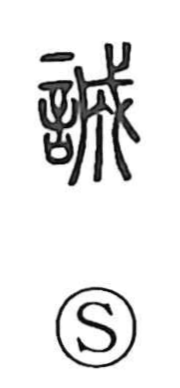

誠

Uncategorized
Kun: makoto | On: sei
sincerity ・ sincere heart ・ to make sincere
Explanation
Shirakawa reads 誠 as a phono-semantic character: 言, the words of an oath, combined with 成, which provides the on reading sei and depicts a ritual act in which a pike (戈) is adorned and used to exorcise, signifying completion and purification. In this light, 誠 expresses words pledged to the deities from a heart purified by such rites—and by extension, that purified heart at the moment of swearing. Hence its senses of sincerity, making something sincere, and true heart. Classical texts honor this quality: the Zhongyong declares, “Sincerity is the Way of Heaven,” and Mencius repeatedly upheld 誠 as a central virtue.